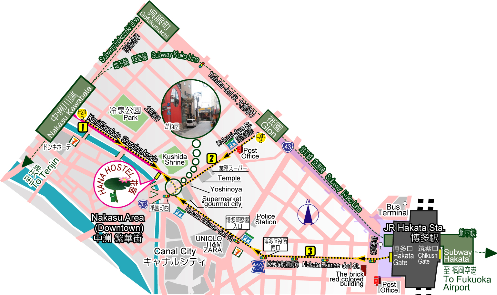

Location
Address
Postal Code 812-0026
4-213, Kamikawabata-machi, Hakata-ku, Fukuoka City
Phone Number
092-282-5353 (domestic)
+81-92-282-5353 (from overseas)
Route 1
Easiest Access

- From JR Hakata, change trains to Subway (Kuko Line) [200JPY]
- Get off at the Nakasu Kawabata station [K09] [about 3min]
- Walk out of Exit No.5. (Exit for Kawabata) exterior view of Fukuoka Hana Hostel
- On the way upstairs. The stair case splits into two. You MUST take the right staircase, and then you will come out in the shopping arcade.
- Go left and walk along on the shopping arcade for 400m. And you will find us, closer to the end of the shopping arcade, on your right side. The shopping street will cross over two back streets. Stay under the roof of the shopping arcade until you reach us!
Route 2
Cheaper than Route 1
- From JR Hakata, change trains to Subway (Kuko Line) [100JPY]
- Get off at the Gion Sta.[K10] [about 1 min]
- Walk out of Exit No.3. Take "Kokutai-doro Street" starting from Pachinko building with the sign `Gion 11`.
- Walk along the road for about 300m until you see the red walled restaurant and the pedestrian overpass. (Do not across over the pedestrian overpass!)
- You can take the narrow street (There is a red walled restaurant). After about 50m, you will see the entrance of a shopping arcade. After walking along the shopping arcade about 30m, you will find us on your left side.
From Hakata Port
- At the Hakata Port International Terminal, you can take the Nishitetsu Bus from Hakata Port Int'l Terminal bound for Hakata Station Area, and get off Gion-machi. It takes about 12min. Fare is 220JPY.
- After getting off the bus, refer to the Route 2.
From Fukuoka Airport
- Take Subway (Kuko Line) to Gion Sta.[260JPY] or Nakasu Kawabata[260JPY]
- After getting off the station, please refer to the above Route 1 [From Nakasu Kawabata Sta.] or Route 2 [From Gion Sta.].